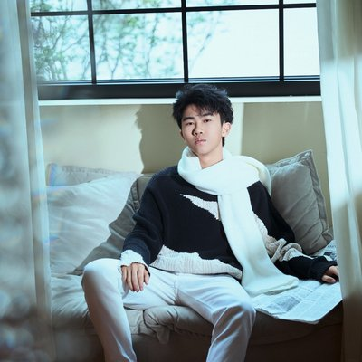

王子航
📱 18123375523 ✉ wangzihang_chengdu@163.com
电子科技大学 信息与软件工程学院 智能软件专业 2024级

教育背景
电子科技大学（UESTC）
成都市第七中学
技术技能
项目经历
EnNeuro 轻量级深度学习框架 + DonkeyCar 仿真自动驾驶
项目负责人
- 完全基于 Python/NumPy/CuPy 自研 CNN 深度学习框架，并在 DonkeyCar Sim 仿真环境中验证端到端自动驾驶策略
- 从零实现前向/反向传播（自动微分）、卷积层、池化层、优化器等核心模块，无第三方深度学习依赖
- 基于 EnNeuro 训练驾驶策略网络，在 DonkeyCar Sim 模拟器中完成多轨道测试与调优
- 主导项目全周期（需求分析→框架设计→训练验证），培养深度学习底层原理与工程实现能力
跨时间域动物面部识别（服务外包大赛）
模型设计师 / 模型训练师
- 以山魁（狒狒）为主要数据集，研究动物面部跨时间域识别，目标迁移至人脸识别任务
- 对身份识别与年龄识别分支进行对抗学习，使模型在识别个体身份时对年龄特征保持不变性，增强时间域鲁棒性
- 引入正交解耦策略分离身份特征与年龄相关特征，降低跨时间域误识率
- 以 Top-1 Accuracy 和 TAR@FAR 为主要评估指标，多轮调参验证模型提升
基于 RichDreamer 的文本生成 3D 模型（CVPR 2024 Highlight 方向）
研究员（论文复现 & 方法融合）— 智能信息技术与应用实验室
- 在 RichDreamer 框架基础上进行论文复现及新方法探索，核心路径：文本 → 法线/深度图 → 3D 网格
- 深入理解 Stable Diffusion 条件生成机制，完成法线图与深度图联合扩散模型的复现与消融实验
- 使用 CLIP Score 及主观评判对生成 3D 模型图像质量进行系统评估
- 在复现基础上推进新方法融合探索，加深对生成式 AI 与三维视觉交叉领域的理解
基于 Prompt 注入的持续学习方法（CVPR 2024 方向）
算法研究员（论文复现 & 改进）— 智能信息技术与应用实验室
- 对标 CPrompt（CVPR 2024），在 ViT 框架下研究 Prompt-based 持续学习，缓解灾难性遗忘
- 实现 Prompt 冻结注入机制：将前序 Task 训练所得 Prompt 冻结后注入新 Task 作为先验知识
- 与前序分类器联合训练，在新旧任务间平衡性能，系统性减少遗忘
- 复现基线并进行改进实验，深化对 Transformer 注意力机制与持续学习理论的理解
基于 PaddlePaddle 的视觉智能回收系统（电子科技大学新工科展）
项目负责人 / 模型训练师
- 面向垃圾分类场景，基于 PaddlePaddle 实现端到端视觉识别系统，通过 Arduino 接入实体垃圾桶展示
- 负责数据集构建、模型选型与训练（目标检测 + 分类），实现多类别垃圾实时图像识别
- 将模型推理结果通过串口指令驱动 Arduino 控制实体垃圾桶完成自动分拣，软硬件全链路联调
相关课程
微积分Ⅰ / Ⅱ（共11学分）
线性代数与空间解析几何Ⅰ（4学分）
概率论与数理统计（3.5学分）
离散数学（3学分）
程序设计与算法基础Ⅰ / Ⅱ（5.5学分）
ACM-ICPC 算法与程序设计（2学分）
数据结构（3学分）
计算机视觉（3.5学分）
人工智能基础（3学分）
人工智能时代（2学分）
操作系统原理与实践（4学分）
计算机网络系统（3学分）
数据库原理及应用（2学分）
软件工程与实践（3学分）
获奖情况
- 2025 电子科技大学专项奖学金
- NOIP2022 三等奖
- CSP-J/S 2022 第二轮提高级 二等
- NOIP2021 三等奖
- CSP-J/S 2021 第二轮提高级 二等
自我评价
对深度学习与计算机视觉有浓厚兴趣，拥有从框架底层（自研 EnNeuro）到前沿论文复现（CVPR 2024）的完整实践经历。高中 OI 竞赛背景使其具备扎实的算法思维与 C++ 编程能力，大学期间主导并参与多个视觉类项目，动手实验能力强，善于从数据与实验结果中归纳规律。对计算机视觉、图像质量评价及生成式 AI 有较为深入的理解，工作细致认真，逻辑清晰。